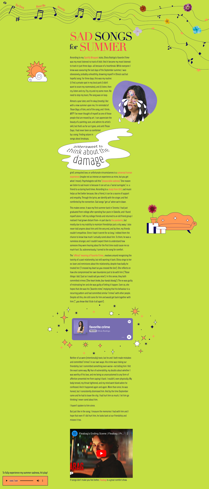

BiteClub
(NEXT.JS / REACT / TAILWIND)

BiteClub's food challenges page
In a team of 5, we designed and developed a unique food exploration web application called BiteClub within 8 months. I was the lead UX/UI Designer and Front-End Developer. Using Adobe Illustrator, Figma, React and Tailwind, I both designed and developed many of the Front-End components, including the logo and customization of other graphics.
Key Features
- Restaurant profiles and reviews
- AI-assisted restaurant recommendations
- AI-powered food challenges
- User-generated blogs
- General user profiles
- Search functionality for restaurants, blogs, and users
My Tools and Languages
- Adobe Illustrator
- Adobe Photoshop
- Next.JS
- React
- Tailwind CSS v4
- Next.JS

In this iteration, I experimented with portraying angry, "ugly" emotions.

One of my many artboards from my iterative process.